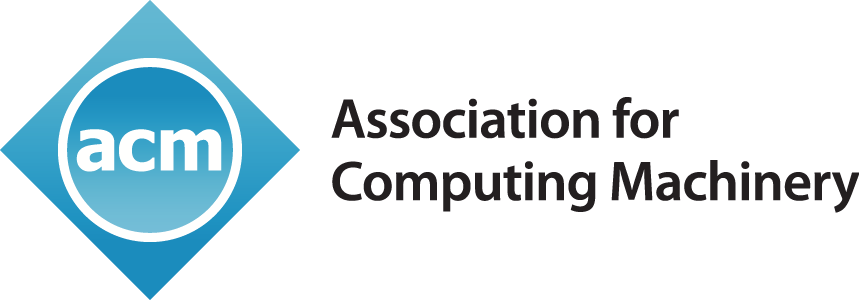

February 2023 - May 2024
Undergraduate Researcher @ UC Merced
Supervised by Prof. Roummel Marcia
Computational Optimization Group, Merced, CA

August 2023 - May 2024
Undergraduate Representative @ SIAM
Society of Industrial Applied Mathematics, Merced, CA

January 2024 - May 2024
Data Science SIG Lead @ ACM
Association for Computing Machinery, Merced, CA

July 2023 - August 2023
Data Science Intern @ LLNL
Lawrence Livermore National Laboratory, Livermore, CA
June 2023 - August 2023
Undergraduate Researcher @ SURI
Summer Undergraduate Research Institute, Merced, CA